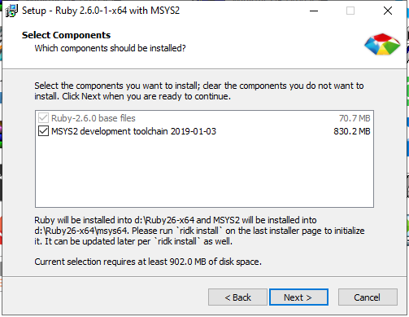
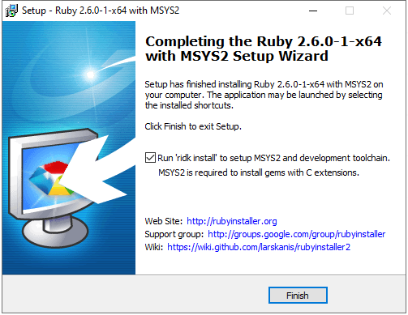

Redmine部署
不识庐山真面目，只缘身在此山中。
安装Ruby
Redmine是基于Ruby on Rails开发的，参考官方文档，我们需要先在服务器上安装ruby环境。 因为redmine版本4.2，所以需要选择正确的版本，这里选择2.6.0。
必须通过rubyinstaller-devkit-2.6.0-1-x64.exe安装MSYS2 development toolchain，如图：  下面这一步千万不能跳过  本来打算跳过之后通过在cmd中运行
ridk install
安装，是万万不行的，这里踩坑后浪费了大量的时间。
如果这里没有安装后面用bundle或者gem安装依赖包会报ssl证书失效的错误。
安装Rails
gem install rails -v 5.2.6
或者使用bundle依据gemfile安装project的依赖包
gem是ruby的包管理器，bundle是ruby的依赖管理器，其它依据redmine官网一步一步操作即可。
bundle install --without development test
安装mysql
- 配置账号可以远程访问
>use mysql;
>SELECT host, user, password FROM user WHERE user = 'redmine';
>GRANT ALL PRIVILEGES ON REDMINE.* TO 'redmine'@'%' IDENTIFIED BY '123456' ;
>flush privileges;
- 创建redmine数据库、用户并配置权限